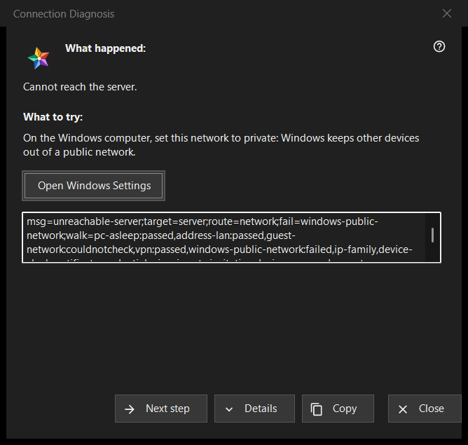

Connection Diagnosis
এটি কীসের জন্য
ব্যাখ্যা করে কেন একটি সার্ভার বা ডিভাইসে পৌঁছানো যাচ্ছে না এবং ধাপে ধাপে কী চেষ্টা করা যায় তা বলে। এটি কম্পিউটারের বা Windows-এর কোনো সেটিং বদলায় না। এটি রিসোর্স তালিকার আরও মেনুর (নির্বাচিত সারির জন্য) Why doesn't it connect?.. থেকে খোলে, আমার ডিভাইসের এমন সার্ভার এন্ট্রি থেকে যা আবার সাইন-ইন করছে, বদলে যাওয়া সার্টিফিকেট দেখাচ্ছে বা সংযুক্ত হতে পারছে না, এবং রিসোর্স খোলা ব্যর্থ হলে নিজে থেকেই।


এই ক্রমে
- What happened পড়ুন।
- What to try-এ যা বলা আছে তা চেষ্টা করুন।
- কারণ তা না হলে Next step চাপুন।
- কেউ কোড চাইলে Details চাপুন, আর সেগুলো দিতে Copy।
- উইন্ডো বন্ধ করুন।
উপাদানসমূহ
What happened
ব্যর্থতা নিয়ে একটি বাক্য, যেমন Cannot reach the server. বা The login or the password is wrong. বা This server does not look like the one you connected to before. এটি সেই ব্যর্থতার ধরন অনুসরণ করে যা উইন্ডোটি খুলেছে।
What to try
উইন্ডো শুরু হয় পরীক্ষায় যে প্রথম ধাপ ব্যর্থ হয়েছে সেখান থেকে, আর কোনোটি ব্যর্থ না হলে প্রথম ধাপ থেকে। সাধারণ ধাপ: যে ডিভাইসে সার্ভার চলে সেটিকে জাগানো; দুটি ডিভাইসই একই নেটওয়ার্কে আছে কি না দেখা; গেস্ট Wi-Fi ছাড়া; VPN কিছুক্ষণের জন্য বন্ধ করা; Windows নেটওয়ার্ককে ব্যক্তিগত করা; অন্য নেটওয়ার্ক থেকে সার্ভার পরীক্ষা করা; সঠিক তারিখ ও সময় ঠিক করা; নতুন ফিঙ্গারপ্রিন্ট নিশ্চিত করা; লগইন ও পাসওয়ার্ড আবার টাইপ করা। শেষ ধাপ বলে যে এটি শুধু সার্ভারের অপারেটরই ঠিক করতে পারেন।
Next step and Windows Settings
Next step ধাপগুলোর মধ্যে এগিয়ে যায় এবং শেষ ধাপে অদৃশ্য হয়। যে দুটি ধাপ Windows সেটিংসে ঠিক করা যায়, নেটওয়ার্ক প্রোফাইল ও ঘড়ি, তাদের জন্য Open Windows Settings বোতাম Windows-এর সংশ্লিষ্ট পাতা খোলে; প্রোগ্রাম নিজে কিছু বদলায় না।
Details and Copy
Details নির্ণয় কোডসহ একটি শুধু-পড়ার বাক্স দেখায় বা লুকায়: ব্যর্থতার ধরন, লক্ষ্য, পথ, ব্যর্থ ধাপ এবং পার হওয়া ধাপগুলো। এতে কখনও ঠিকানা, লগইন, পাসওয়ার্ড বা ফিঙ্গারপ্রিন্ট থাকে না। Copy সেই লাইনটি ক্লিপবোর্ডে রাখে এবং উইন্ডো বলে: Diagnosis codes copied to clipboard.
পরীক্ষা কীভাবে কাজ করে
পরীক্ষা শুধু আপনার চেষ্টা করা সংযোগের জন্য চলে এবং শুধু পড়ে: এটি হোস্ট ও পোর্টে পৌঁছানোর চেষ্টা করে এবং নেটওয়ার্কের অবস্থা, VPN অ্যাডাপ্টার, Windows নেটওয়ার্ক প্রোফাইল, ঠিকানার ধরন, ঘড়ি ও সার্টিফিকেট দেখে। এটি প্রথম ব্যর্থ ধাপে থামে, আর যে পরীক্ষা করাই যায়নি তাকে কখনও পাস বা ফেল গণ্য করা হয় না।